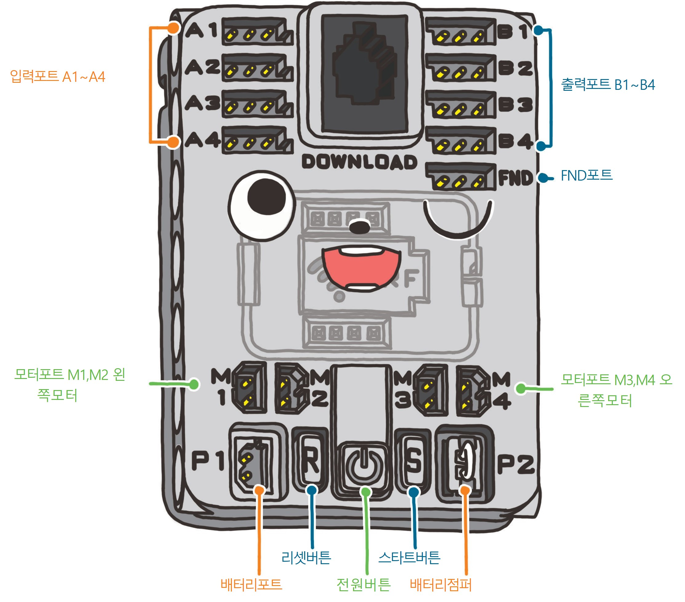
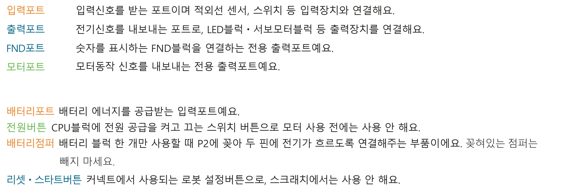
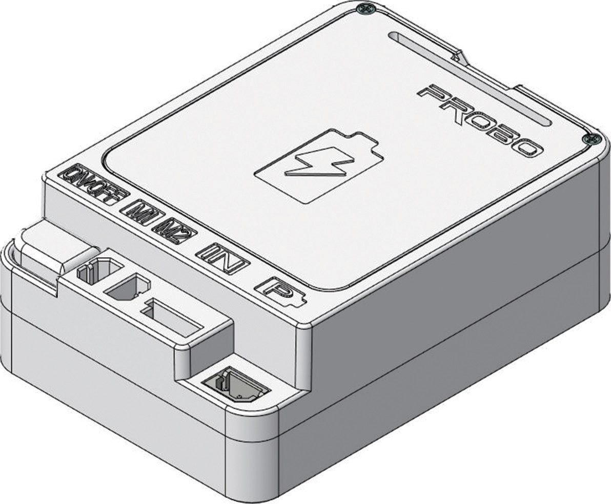

말랑말랑 코딩여행
소개
1. MIT의 ‘스크래치’ 프로그램에 프로보 로봇을 제어할 수 있는 블록 기능을 추가하여, 학생들이 화면 속 캐릭터뿐만 아니라 자신이 작성한 프로그램으로 실제 로봇의 동작을 시각적으로 확인하며
쉽게 코딩을 배울 수 있습니다.


2. 아이들이 좋아하는 만화책처럼 친근한 스토리텔링 방식의 교재는 보물을 찾는 이야기로 시작되어, 아이들이 직접 진행하며 피지컬 컴퓨팅 로봇 조립과 코딩 게임으로 흥미를 계속
유지합니다.


3. 디지털 정보를 입력 받는 다양한 장치와 현실로 결과를 보여주는 피지컬 컴퓨팅을 접목하여 딱딱하고 어렵게 느껴질 수 있는 코딩 교육을 직접 좋아하는 로봇을 만들고 제어하면서 흥미와 호기심을
유발 할 수 있도록 합니다.


4. 관련 영상
프로보 스크래치 설치
<스크래치 다운로드 홈페이지로 이동>
1. 프로보 홈페이지에 접속하여 커뮤니티의 자료실 탭을 누르고 ProboScratchSetup 파일을 다운 받습니다.


2. ProboScratchSetup.exe 파일을 실행 후 다음 순서대로 프로보 스크래치를 설치해 주세요.


3. 설치 완료 후 자동으로 프로그램이 실행됩니다.

USB 다운로더 연결
1. CPU블럭과 USB다운로드 케이블을 연결 후 컴퓨터에 USB를 꽂아 주세요.

2. USB드라이버에서 USB 드라이버 설치 프로그램 실행을 클릭해주세요.

HEX 파일 다운로드
1. 프로보 스크래치의 다운로드에서 커넥트용 스크래치HEX를 선택하여 파일을 다운받아 주세요.


설치 완료 후 잠시 후에 CPU블럭에서 삐~이익~ 소리가 나며 자동 연결됩니다.
코딩여행 들어가기
1. 프로보 스크래치 실행 후 모드에서 코딩여행을 선택해주세요.

코딩여행 모드 선택 시 코딩여행 전용 스토리와 블럭이 나타납니다.
하드웨어
CPU 블럭
1. CPU 블럭
로봇의 머리에 해당하는 부분으로써, 코딩 내용을 기억하고 다른 부품들을 제어하는 역할을 해요. ‘코딩여행’의 진행을 위해서는 CPU블럭이 꼭 필요하답니다. 꽂혀있는 배터리점퍼 는 빼지 않아요.


배터리 블럭
1.배터리 블럭
배터리 블럭은 건전지를 안전하게 보호해주고 모터처럼 전류를 많이 사용하는 부품을 동작시킬 때 직접 전원을 공급해주는 전원 공급 장치입니다.
